Chapter 6
Display and night mode
Choose how the clock looks, and how bright the screen is by day and at night. All of it is under Settings › Display.
Clock styles
Six ways to show the time and today’s prayers. Pick one under Clock style.

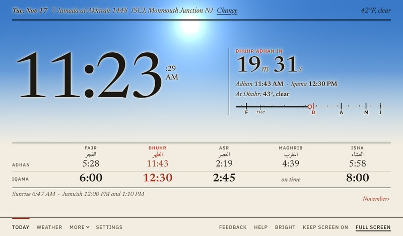

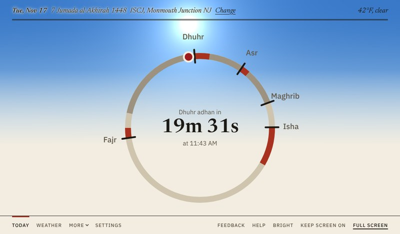

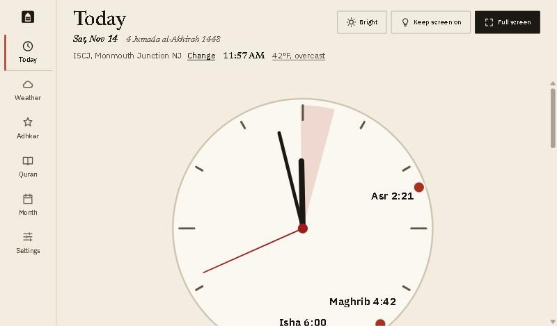

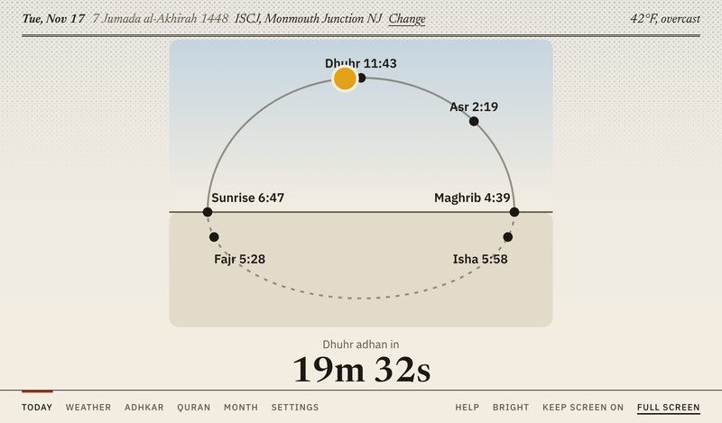


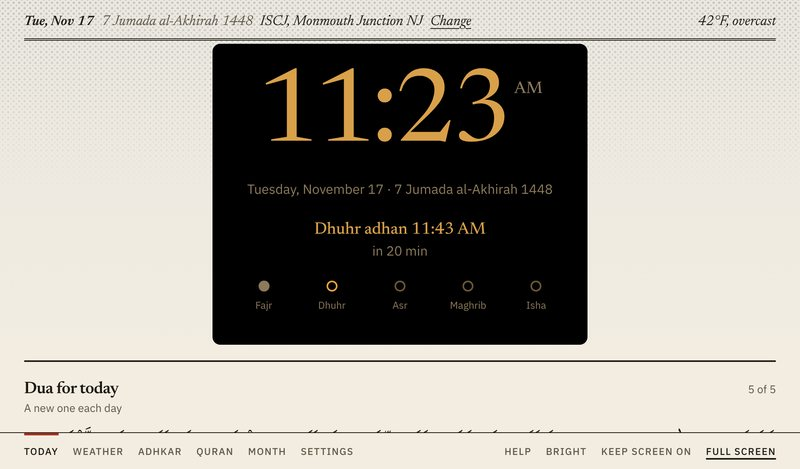
Look and brightness

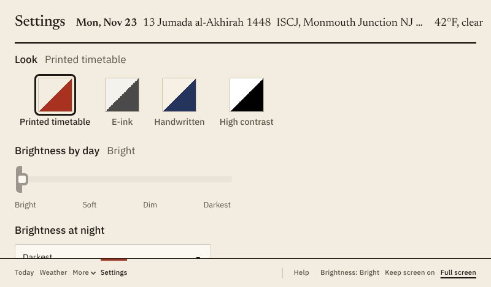
- Look: Printed timetable (paper and ink, with the weather sky behind), E-ink (grey paper and black ink, nothing moves), Handwritten (blue pen on a ruled sheet), or High contrast (black and white, easiest to read from afar).
- Brightness by day: Bright, Soft, Dim or Darkest. The Brightness button at the bottom right of every screen changes it for now, until night starts or ends.
The E-ink look

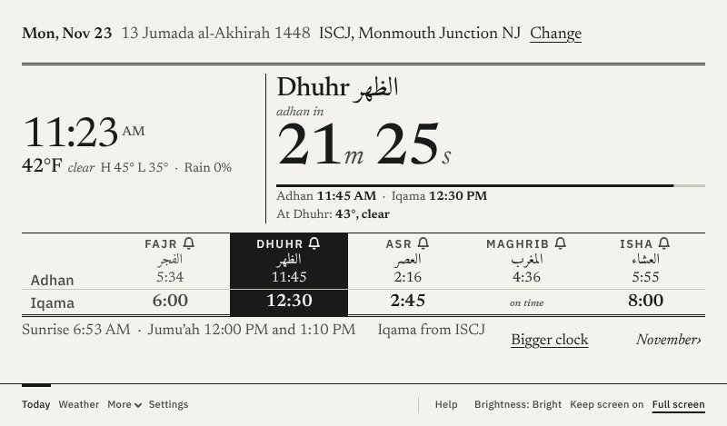

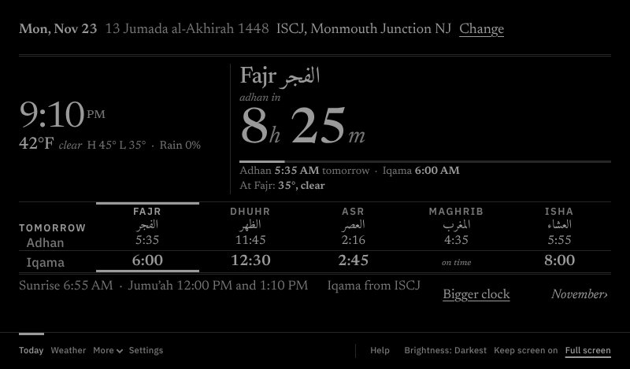
E-ink is the calmest look, easy on the eyes. There is no colour and no weather picture, and nothing moves: every change happens at once, like a page on an e-ink reader. In the last 15 minutes before a prayer the countdown turns into a black label by day and an outlined box at night, without flashing.
At night

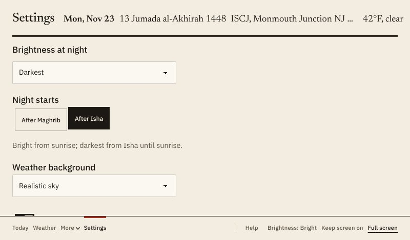
- Brightness at night: Same as by day, Soft, Dim, Darkest, or Black (no light).
- Night starts: After Maghrib or After Isha. The screen goes back to the day’s brightness at sunrise.
- The line underneath says what will happen, in plain words.
Black (no light)
With Black, the whole screen goes black at night, 30 seconds after the last touch. Tap the screen, or press a key or the remote’s OK button, to see the times for 30 seconds; that tap does nothing else. When an alert comes, the screen lights up to show it, with Stop while a sound plays. Alerts keep working all night, because the app stays awake.
Black on your screen
- On most phones and many TVs (OLED screens), black pixels are switched off, so Black gives no light at all.
- On LCD screens, such as Fire tablets and most other tablets, the backlight still glows faintly behind the black, and a web page cannot turn it off. Turn the device’s own brightness down at night too; many tablets can do that on a schedule.
Weather background and clock

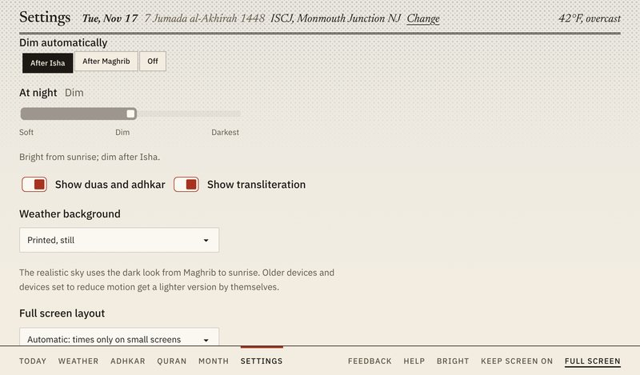
- Weather background, on the Today screen in the Printed timetable look (the Weather tab always shows the sky; chapter 9). Realistic sky (the usual choice) draws today’s real sky: the sun on its path from sunrise to Maghrib, clouds drifting with the wind, rain and snow as heavy as they really are, fog, a soft glow behind the clouds in a storm, and at night the stars and the moon at the phase of the Hijri date. The night sky shows at Darkest; on a lighter night page the printed sky shows instead. Printed draws the same weather in ink, and Off leaves plain paper. Older tablets get the printed sky by themselves.
- Movement: turn it off to keep the picture still.

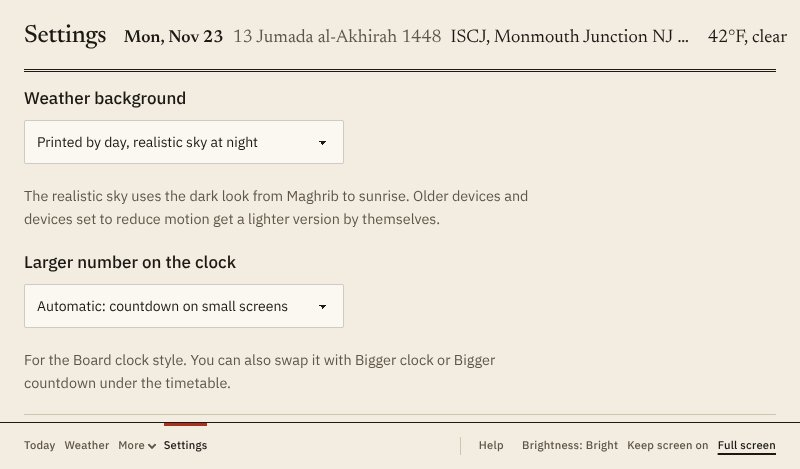
- Larger number on the clock, for the Masjid board: Automatic shows the countdown large on phones and small tablets and the time large on bigger screens, or choose The time now or The countdown to the next prayer to keep one. Bigger clock and Bigger countdown on the Today screen do the same.
- Show seconds: on by default. Turn it off for a calmer screen; the countdown then shows whole minutes, such as 22m.
- Show duas and adhkar and Show transliteration turn the dua on the Today screen, and its English letters, on or off.
Under More display options:
- Full screen layout: Times only, Clock, prayers and dua, or Automatic, which shows times only on small screens.

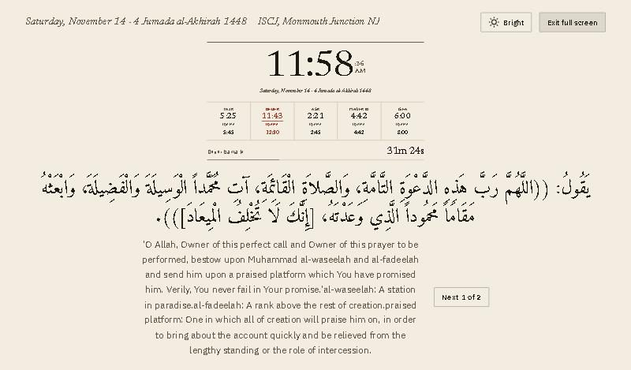
Good to know
- Arabic text size (Small, Medium, Large) is at the bottom of the page, with Keep screen on.
- Screen burn-in: while the screen is kept on, the page moves a few pixels every 2 minutes, and at night the lines that never move fade, so nothing stays lit in one place.